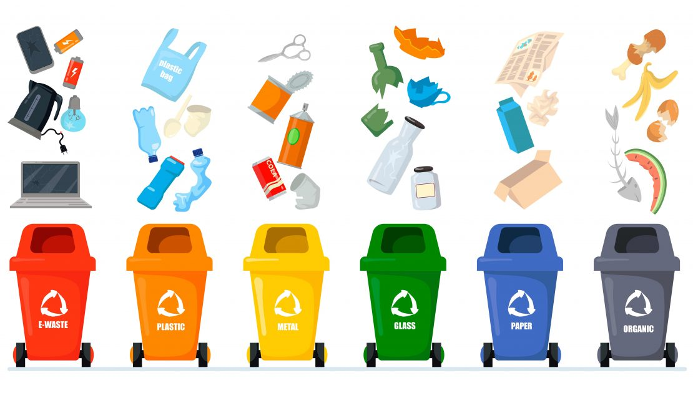
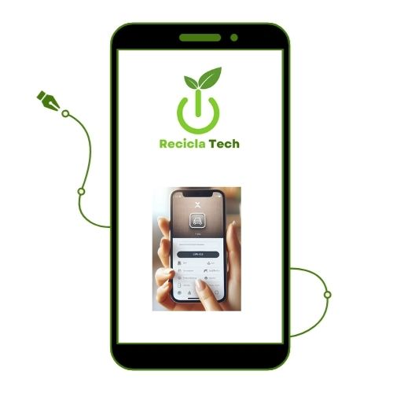
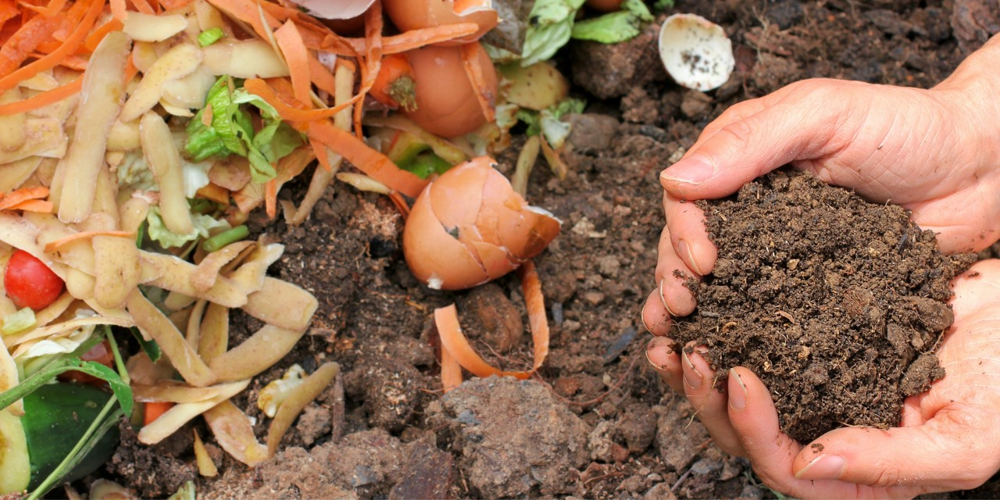
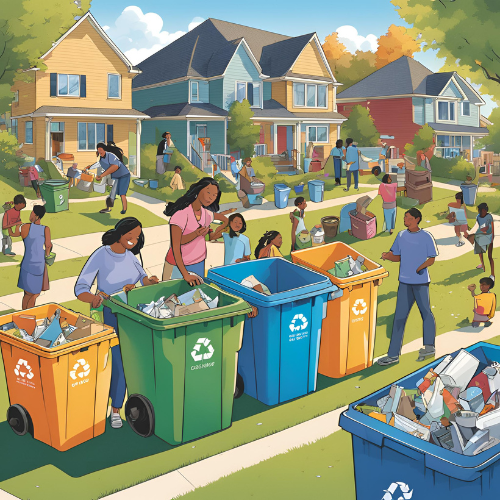
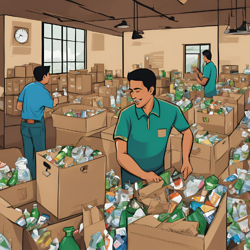
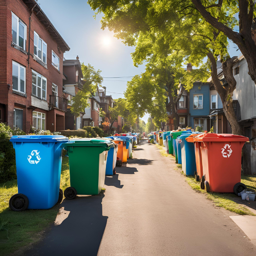

Ofrecer servicios de recolección accesibles y eficientes, respaldados por el uso de aplicaciones móviles, que contribuyan a mejorar la calidad de vida de las comunidades de estratos 2 y 3. Nuestro enfoque se centra en la sostenibilidad y la responsabilidad social, garantizando que cada recolección no solo atienda las necesidades inmediatas de los hogares, sino que también promueva prácticas amigables con el medio ambiente. Al integrar tecnología y compromiso social, buscamos empoderar a estas comunidades y facilitar el acceso a servicios que realmente marquen una diferencia en su día a día.
Visión
Convertirnos en la empresa líder en Bogotá en la gestión eficiente y sostenible de residuos, promoviendo una cultura de reciclaje que favorezca tanto el bienestar ambiental como la calidad de vida de las comunidades. Nos proponemos lograr esto a través de la innovación tecnológica y un sólido compromiso social, asegurando que nuestras prácticas no solo gestionen residuos de manera responsable, sino que también eduquen y empoderen a la población en la importancia del reciclaje y la sostenibilidad.
Nuestros Productos y Servicios
Servicio personalizado de separación y recolección de residuos

Uso de aplicaciones móviles para solicitud de recolecciones

Aprovechamiento de residuos (Orgánicos, reciclables y no reciclables)

Nuestros Clientes
Los hogares en estratos 2 y 3 de Bogotá están formados por familias trabajadoras que, a pesar de enfrentar limitaciones económicas, buscan mejorar su calidad de vida. Estas familias son el motor de la economía local, pero a menudo tienen dificultades para acceder a servicios básicos de calidad, como agua potable y energía eléctrica.
A pesar de sus desafíos, están dispuestas a pagar por servicios eficientes que satisfagan sus necesidades. Buscan soluciones que no solo resuelvan problemas inmediatos, sino que también contribuyan a un futuro más sostenible. Al diseñar iniciativas para estas comunidades, es fundamental entender sus necesidades y ofrecer servicios que realmente mejoren su bienestar y el de su entorno.



Nuestro Equipo
Gerente General
Luis Parra: Responsable de la dirección estratégica del negocio, toma de decisiones clave y establecimiento de alianzas con socios (gobierno, empresas recicladoras, organizaciones ambientales).
Coordinadora de Operaciones
Clara Muñoz: Encargada de coordinar la recolección, transporte y gestión eficiente de residuos, así como del cumplimiento de normativas y estándares de calidad en el proceso de reciclaje.
Coordinadora de Marketing, Ventas y Atención al Cliente
Yenny Caldas: Desarrolla campañas de concienciación sobre reciclaje, promoción del servicio, programas de fidelización y asegura la satisfacción del cliente.
Gerente de Tecnología
Neider Serrano: Desarrolla y mantiene la aplicación móvil, asegurando que sea accesible, eficiente y fácil de usar para que los clientes soliciten el servicio de recolección de residuos de manera efectiva.
Gerente Financiero
Carolina Contreras: Administra los recursos financieros, elabora presupuestos, realiza análisis de costos y asegura la rentabilidad del negocio mediante una gestión eficiente de ingresos y gastos.